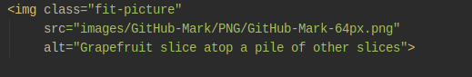
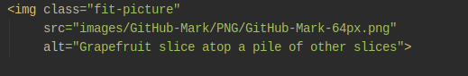

The HTML <img> element embeds an image into the document.

HTML supports various multimedia resources such as images, audio, and video.
The HTML <img> element embeds an image into the document.

The HTML <audio> element is used to embed sound content in documents. It may contain one or more audio sources, represented using the src attribute or the <source> element: the browser will choose the most suitable one. It can also be the destination for streamed media, using a MediaStream.
Listen to the water sound
The HTML Video element (<video>) embeds a media player which supports video playback into the document. You can use <video> for audio content as well, but the <audio> element may provide a more appropriate user experience.